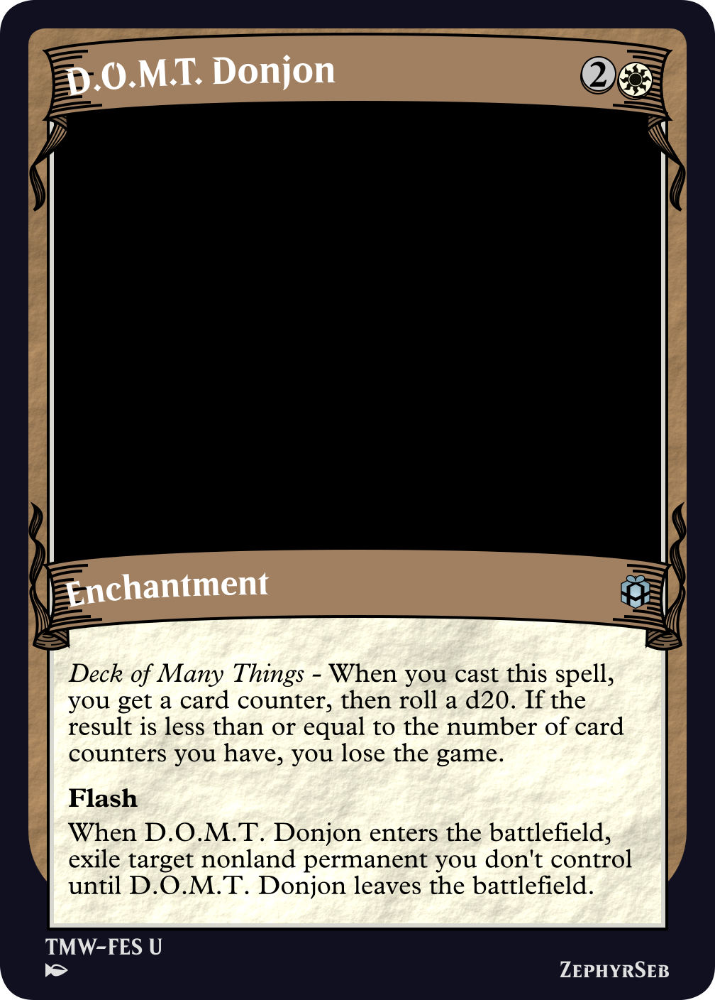
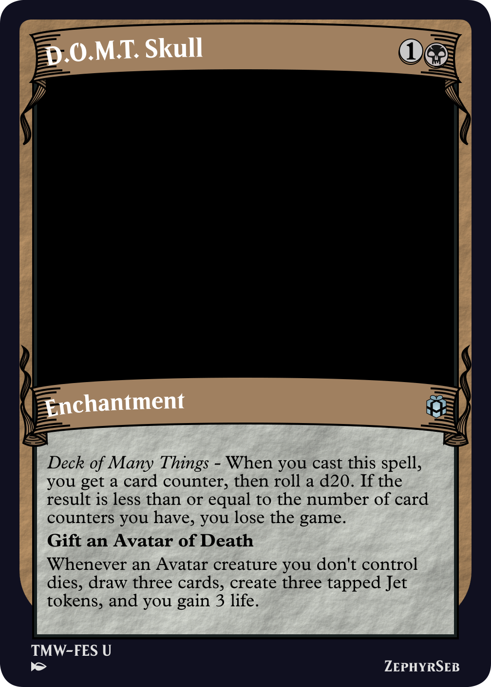
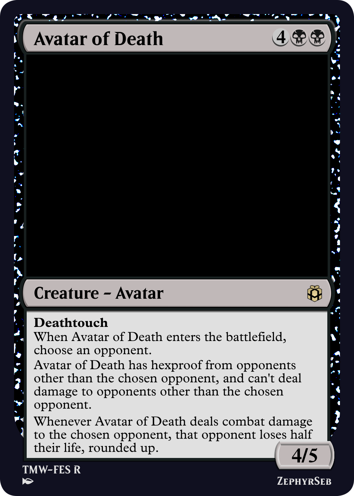
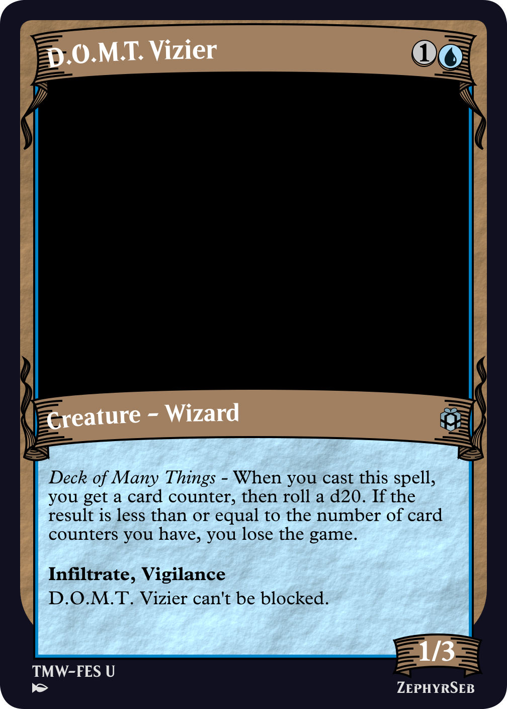
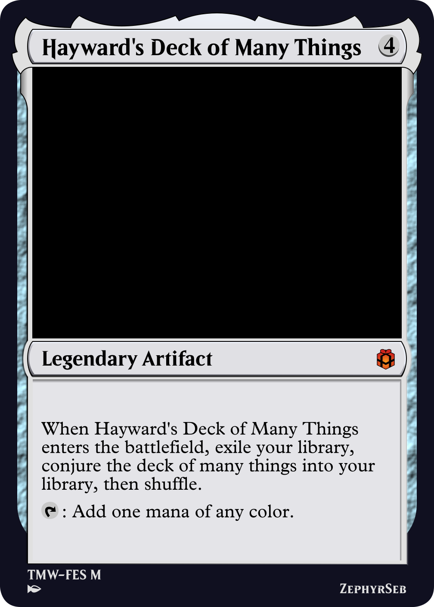
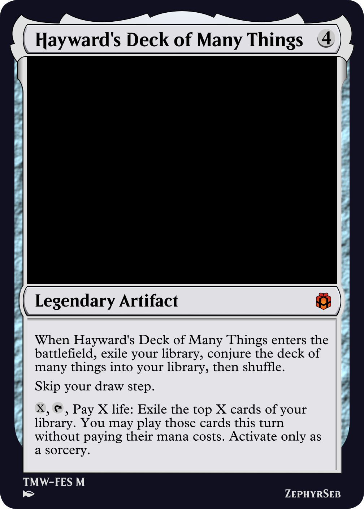
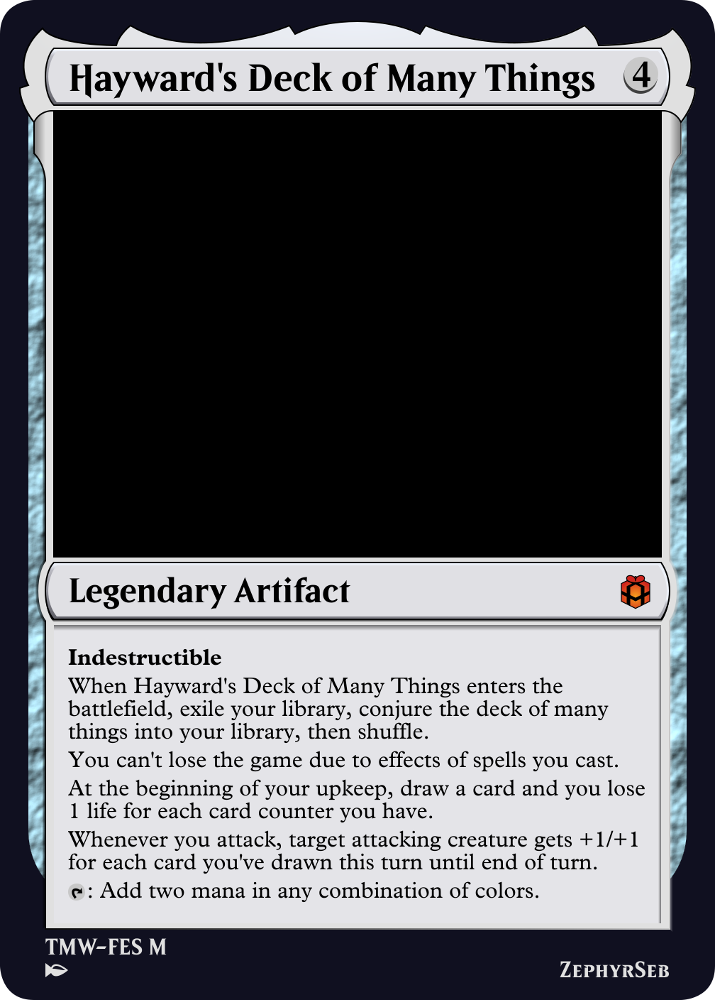
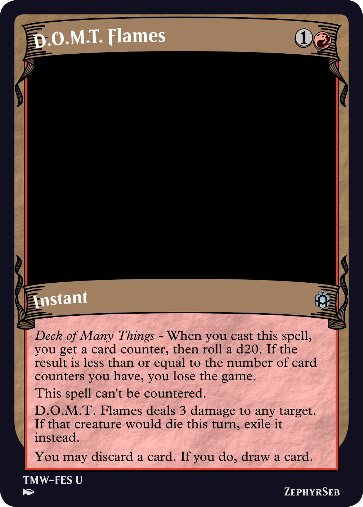
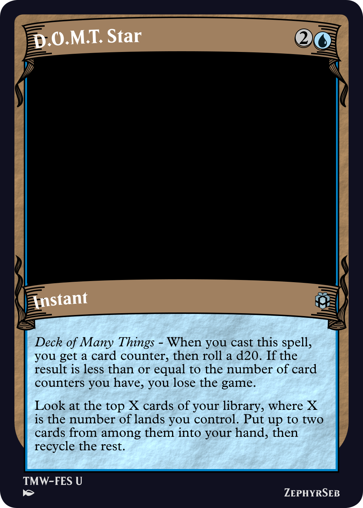

It's the winter festival, and you've received a package from a mysterious benefactor. You open it, to find it's simply a pack of cards. The cards are very ornate, and so you draw a card. It says Donjon. Before you know it, you've been imprisoned somewhere, awaiting your fate to be sacrificed to a blood ritual.

D.O.M.T. Donjon
Festiville was based on a D&D one-shot that was run a few years ago based around a classic D&D item, the Deck of Many Things. In the story, the character Hayward Eve is gifted the deck, and whatever happened next was left to chance by him drawing from the deck. By chance, he drew the Donjon card, exiling him to a faraway dungeon and setting a quest for the player characters to go and rescue him.
When designing the Festiville set, it was clear that the deck should have a strong presence in the set. This led us to ask, how do you mimic the chaos and risk that the Deck of Many Things warrants in MTG?
The first thing we tried was if you had access to the deck of many things as an extra deck - effects could let you draw from the deck, but some of the cards might have negative effects. This approach had some issues - if the risk was too great, the mechanic would never see play; but modern design philosophy often says that you 'may' play a card, which turns all the bad effects into completely blank cards.
Therefore the cards would need to be part of the main set. 22 cards isn't quite enough for a bonus sheet, so instead they filled 22 uncommon slots, but to prevent awkward draft packs, the uncommon slots are split up to always have one D.O.M.T. card, and two non-D.O.M.T. cards.


D.O.M.T. Skull and Avatar of Death
The next question the design had to answer was how to include risk in the cards design? As mentioned before, if a card is just a negative effect on you, the cards won't see play outside of some very specific combo lines. So we turn back to the Deck of Many Things. When you use it in D&D, you choose how many cards to draw, then draw them all at once. The more you draw, the more likely you'll hit a bad effect. We can simulate this in MTG using counters to track progress. When you cast a DOMT spell, you roll a d20 and get a card counter. If you roll low enough on the dice that the result is less than or equal to the number of card counters you have, something bad happens: you lose the game. There aren't any results worse than that in MTG. This means that D.O.M.T. cards have some risk, but if you only play one or two, you'll probably be fine. Probably. Play more, and the risk gets greater. Below is a table of the cumulative probability that you'll have lost the game after a certain number of D.O.M.T. cards, as worked out by one of my D&D players:
| Number of D.O.M.T. cards played | Chance to survive this card | Cumulative chance |
| 1 | 95% | 95.0% |
| 2 | 90% | 85.5% |
| 3 | 85% | 72.7% |
| 4 | 80% | 58.1% |
| 5 | 75% | 43.6% |
| 6 | 70% | 30.5% |
| 7 | 65% | 19.8% |
| 8 | 60% | 11.9% |
| 9 | 55% | 6.55% |
| 10 | 50% | 3.27% |
| 11 | 45% | 1.47% |
| 12 | 40% | 0.589% |
| 13 | 35% | 0.206% |
| 14 | 30% | 0.0619% |
| 15 | 25% | 0.0155% |
| 16 | 20% | 0.00309% |
| 17 | 15% | 0.000464% |
| 18 | 10% | 0.0000464% |
| 19 | 5% | 0.00000232% |
| 20 | 0% | 0% |
Now the cards have an inherent risk to playing them. The designs of each card need to be valuable enough that the risk is worth it - the cards need to be slightly more powerful.

D.O.M.T. Vizier
The last piece of the puzzle was the inclusion of a card that cared about these D.O.M.T. cards. This card was Hayward's Deck of Many Things, which replaces your library with the deck, giving you a last ditch strategy to try and win the game with. This card went through a number of redesigns throughout the design process.



Versions of Hayward's Deck of Many Things throughout design
In the previous articles on this website, we talked about the storm scale and how it applied to different mechanics. D.O.M.T. had quite a high storm rating, despite it being a popular and powerful mechanic. The reason for this was design space. The deck consists of 22 cards. Festiville features all 22 cards. It would be strange to invent new cards for such a famous item (though not impossible, 22 is the number of major arcana cards in a standard tarot deck, and a certain game series that heavily features tarot cards manages to invent new tarot cards all the time). It is more likely that, if the need for a similar mechanic should arise in the future, that a more general take on the idea could absolutely become a mainstay mechanic. After all, everyone loves powerful cards, except when they cause you to lose the game.


D.O.M.T. Flames and Star, the backbone of a very risky izzet spells deck
I hope you roll natural 20s, until next time,
ZephyrSeb